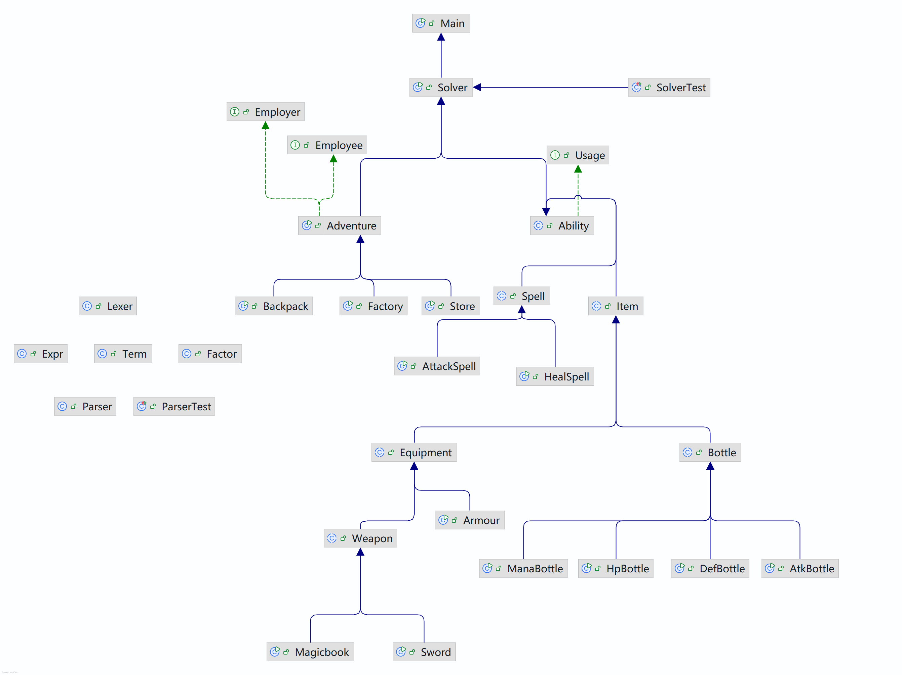

OOpre总结
架构设计
最终架构

具体模块
指令处理Slover
为了保持main函数的简洁,我们将对输入指令的处理单独拿出来.
识别指令的类型,调用相应的方法实现指令的效果.
冒险者Adventure
冒险者本身有4个属性:hitPoint,atk,def,mana
为了方便这些属性的获取和更改,我们建立相应的get和set方法.
物品Item
- Bottle:
HpBottle增加被使用者的hitPoint值AtkBottle增加被使用者的atk值DefBottle增加被使用者的def值ManaBottle增加被使用者的mana值
- Equipment
Armour加成被使用者的最终def值WeaponSword加成被使用者的最终atk值MagicBook消耗使用者mana,加成被使用者的最终atk值
- Spell
- 从
botList中添加/删除Bottle - 从
equipList中添加/删除Equipment - 从
spellList中添加/删除SpellBackpack
用于对冒险者的物品进行管理.侧重于实现携带. - 从
botTakeList(上限为10)中添加/删除Bottle - 设置携带的装备
armourTake,weaponTakeStore
实现对冒险者金钱的管理. - 购买具有相应法力值的
Bottle或者Equipment - 继承死亡冒险者的金钱
Fight
实现冒险者之间的战斗. - 物理攻击
WeaponTake不存在或者Type为Sword - 魔法攻击
WeaponTake的Type为MagicBook雇佣关系
实现对于冒险者之间的关系的处理.一个冒险者只能有一个直属上级,并且雇佣关系是单向的. - 添加/删除雇佣关系
- 批量添加雇佣关系(递归下降)
- 判断关系
- 上级 直属上级,所有上级的上级
- 下级 直属下级,所有下级的下级
- 盟友 自己以及所有的上下级
迭代调整
hw2
- 学会
ArrayList的使用 - 建立最基础的
Adventure类,Bottle类,Equipment类 - 指令类型
- 继承以及接口的使用
- 新增内容
- 新增冒险者的4个属性
- 引入法术
Spell - 详细划分
Bottle4种药水瓶,继承Bottle父类. - 引入背包系统
- 引入可用物品 新增接口
Usage判断物品是否可用Bottle拥有并携带Spell学习过并且冒险者mana属性大于manaCost
- 新增指令
- 知识学习
- 深克隆与浅克隆
- ==/equals?
- String类的使用(包括substring的使用)
- Map接口的实现如何比较key的相等性
- 遍历容器(迭代器的删除)
- Scanner.next()的使用
- 与迭代作业无关
hw5
- 知识学习
- HashMap与HashSet
- 工厂模式(类创建型模式)
- 简单工厂模式
- 工厂模式
- 抽象工厂模式
- 新增内容
- 细分
Equipment,继承父类 - 实现背包中物品的数量控制
- 新增战斗系统
- 新增金钱系统
- 细分
- 新增指令
- 知识学习
- 观察者模式
- 新增内容 雇佣关系的定义
- 新增
Employer和Employee接口 - 被观察者(
Employer)需要援助,通知观察者(Employee)
- 新增
- 新增指令
- 知识学习
- 文法
- 词法语法分析
- 递归下降
- 新增内容 批量添加雇佣关系
- 新增
Expr(冒险者),Term(被雇佣者),Factor(标识符) - 词法分析
Lexer - 语法分析
Parser
- 新增
- 新增指令 导入一组雇佣关系
使用Junit的心得与体会
- 最开始写觉得是一件很麻烦的事情,但是随着代码越来越复杂,涉及到的部分越来越多就会发现Junit的好处.经常在写Junit的过程中就发现了bug并解决了,节省了不少时间.
- 测试方法
- 先测试一个方法内部没有问题,再以这个方法为基础测试其它方法.
- 从整体的角度测试整个代码的运行架构
- 使用Assert比较关键部分的预期值与实际值
学习OOpre的心得体会
- 从面向过程到面向对象的过程转变
- 从类的角度去看,使方法的编写更加清晰
- 从整体到局部的思维转变
- 以递归下降为例,只关注局部,使代码编写更加简洁
- 更深刻地理解封装的思想与内涵
- 只关心调用,不关心内部实现
对OOpre课程的简单建议
很喜欢这门课,老师讲得非常好,助教很用心负责,作业也很有意思。
本博客所有文章除特别声明外，均采用 CC BY-NC-SA 4.0 许可协议。转载请注明来源 PlutoC！